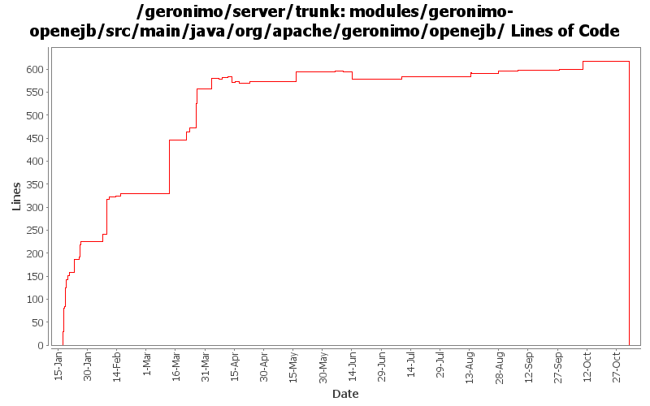

[root]/modules/geronimo-openejb/src/main/java/org/apache/geronimo/openejb

| Author | Changes | Lines of Code | Lines per Change |
|---|---|---|---|
| Totals | 148 (100.0%) | 956 (100.0%) | 6.4 |
| dain | 46 (31.1%) | 555 (58.1%) | 12.0 |
| dblevins | 29 (19.6%) | 170 (17.8%) | 5.8 |
| djencks | 19 (12.8%) | 137 (14.3%) | 7.2 |
| rickmcguire | 7 (4.7%) | 56 (5.9%) | 8.0 |
| vamsic007 | 18 (12.2%) | 19 (2.0%) | 1.0 |
| kevan | 1 (0.7%) | 8 (0.8%) | 8.0 |
| dims | 1 (0.7%) | 5 (0.5%) | 5.0 |
| dwoods | 2 (1.4%) | 3 (0.3%) | 1.5 |
| sppatel | 2 (1.4%) | 2 (0.2%) | 1.0 |
| akulshreshtha | 1 (0.7%) | 1 (0.1%) | 1.0 |
| prasad | 22 (14.9%) | 0 (0.0%) | 0.0 |
GERONIMO-3565. Modules distributed amongst framework/modules and plugins
0 lines of code changed in 22 files:
svn props
19 lines of code changed in 18 files:
Reverted the deploymentId change, seems the value of {appId} causes issues.
2 lines of code changed in 1 file:
Accidentally checked it in in a non-configurable way. Made it configurable.
2 lines of code changed in 1 file:
Fix for GERONIMO-3199: Prefix ear name in deployment-id to make it unique
Set jndiname format to {ejbName}{interfaceType.annotationName}
Setup jndi name binding of non-javaee clients to not fail a deployment if a name is taken (just logs an ERROR as usual).
4 lines of code changed in 1 file:
Updated the SecurityService implementation for the revised SecurityService
It's now method compatible with 3.0-beta-1 as well as trunk which has two extra methods
6 lines of code changed in 1 file:
GERONIMO-3484 make openejb-deployer work when openejb is loaded but not started
1 lines of code changed in 1 file:
Updated for change in related Info objects
3 lines of code changed in 1 file:
Partial fix for GERONIMO-3445. OpenEJB side of this fix still to come.
2 lines of code changed in 1 file:
A fix for app client refs to ejbs
14 lines of code changed in 2 files:
GERONIMO-3407 stop using SubjectRegistrationLoginModule
6 lines of code changed in 1 file:
GERONIMO-3404 GERONIMO-3406 Fix the return values from login module lifecycle methods and add some javadoc and a little code cleanup
11 lines of code changed in 1 file:
OPENEJB-605 related, a remote openejb-protocol login module to get the identification principal, and changes to the SecurityService and IdentityService to use it
24 lines of code changed in 4 files:
GERONIMO-2687 Fix some problems with deregistering default and run-as subjects
0 lines of code changed in 1 file:
GERONIMO-2687. Don't construct default and run-as subjects, get them from a login module. Also creates a separate server-security-config for the security config stuff you probably want to change. Also fixes lots of security problems, including mdb run-as handling.
48 lines of code changed in 4 files:
G3178 - Server startup console warning w/ Tomcat JEE5 - EjbModule URL not valid: MEJBGBean
2 lines of code changed in 1 file:
Give the EjbDaemonGBean a friendly name of 'OpenEJB Daemon' to display at server startup
1 lines of code changed in 1 file:
GERONIMO-3132 GERONIMO-3165. Fix a bunch of stuff with locating persistence.xml and persistence unit jars. Hook up with openejb for extended persistence contexts
30 lines of code changed in 2 files:
MEJB support
1 lines of code changed in 1 file:
GERONIMO-3131 GERONIMO-3132 GERONIMO-3133 GERONIMO-3134 Defaults for persistence units. Supply locations of jars with persistent classes to the PersistenceUnitInfo. Match a ref with not persistence unit specified to a unique match. Allow wars to have jndi references pointing to the war module, not just the ear
1 lines of code changed in 1 file:
use correct property name
1 lines of code changed in 1 file:
Minor fix to name format
2 lines of code changed in 2 files:
Use the new jndi name strategy in openejb which should fix the client ref issue
3 lines of code changed in 1 file:
Forgot to check this in last night.
2 lines of code changed in 1 file:
Fix build break caused by openejb3 update.
1 lines of code changed in 1 file:
Use the other enum to get the right proxy back
1 lines of code changed in 1 file:
Avoid potential NullPointerException on rar undeploy
8 lines of code changed in 1 file:
Updated to work with new OpenEJB proxy creation code
4 lines of code changed in 1 file:
Must use remote interface to create EJBObject proxy, not local interface
3 lines of code changed in 1 file:
GERONIMO-3011 Change default RMINaming port to 1098
Added system property admin.disabled=true
Removed PluginBootstrap, it was used by Maven1 build
1 lines of code changed in 1 file:
GERONIMO-3073 move GeronimoIdentityResolver to geronimo-openejb module
5 lines of code changed in 1 file:
GERONIMO-3072 fix some ejb security problems
4 lines of code changed in 1 file:
GERONIMO-3066 ClassCastExceptions when dealing with SessionBeans through CORBA.
2 lines of code changed in 1 file:
make sure all resource adapters are registered before starting an ejb module
24 lines of code changed in 1 file:
When there is no security config, disable security checks
35 lines of code changed in 3 files:
Added support for external ejb refs
Ejb module id is now the id declared in the plan or path within the ear
3 lines of code changed in 1 file:
remove the disable security flag
0 lines of code changed in 1 file:
Added OpenEJB security integration
66 lines of code changed in 4 files:
GERONIMO-3001 A cleaner fix that gets the comp/ORB insertion working the way it needs to be.
21 lines of code changed in 2 files:
GERONIMO-3001 Fix the ORBProviders GBean definition.
2 lines of code changed in 1 file:
(30 more)